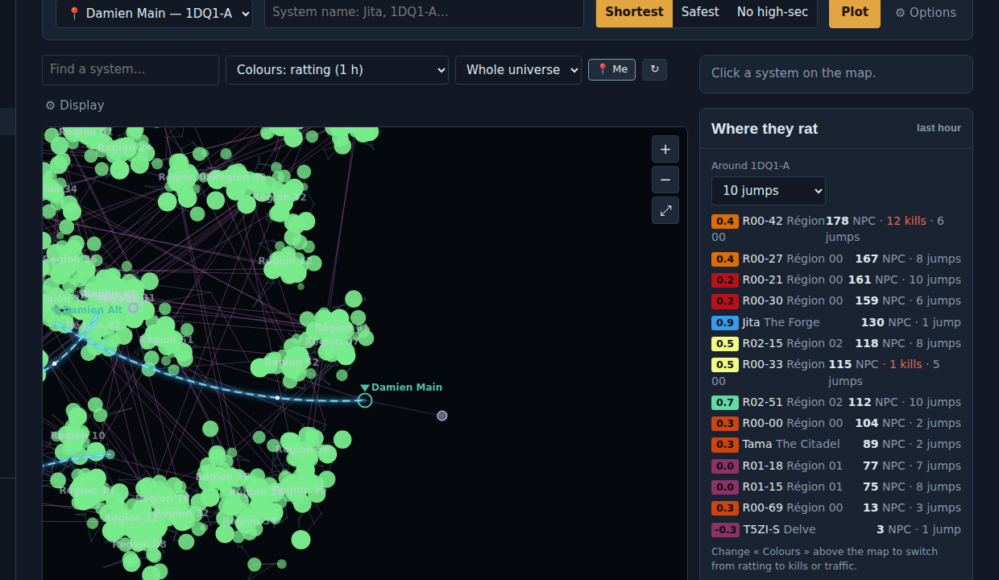

Los puentes de tu alianza
Importa los puentes Ansiblex desde tu personaje y planifica rutas por ellos.
Actividad en directo
Kills, cápsulas, saltos y rateo de la última hora: cuanto más grande el círculo, más movimiento.
Rutas con sentido
La más corta, la más segura o sin high-sec, con Thera y Turnur, kills en el camino y enlace a Dotlan.
- Escribe adónde quieres ir: la salida es la posición de tu personaje.
- Elige la más corta, la más segura o sin high-sec.
- Envía el destino al juego o sigue la lista de saltos.

Robapin
Apoya Cockpit con ISK
Cockpit es gratis, sin anuncios y se desarrolla en el tiempo libre. Si te ha ahorrado tiempo, ISK o una flota, una donación en ISK ayuda a seguir añadiendo funciones.
- Busca al pilotoEn el juego, busca el nombre de abajo y abre su ficha.
- Clic derecho en el retratoLuego « Dar dinero » (Give Money).
- Añade un motivoEscribe « Cockpit » para saber de dónde viene el apoyo.
Aún más fácil: en Cockpit, abre « Apoyar Cockpit » y pulsa « Abrir su ficha en mi juego ».
El ISK es moneda del juego y no puede cambiarse por dinero real, según las normas de EVE Online. Cada donante tiene exactamente el mismo Cockpit: ninguna ventaja de pago, nunca.